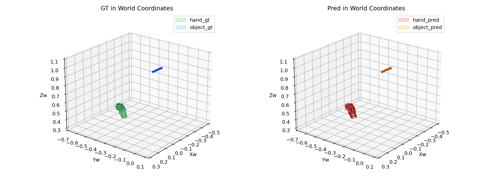
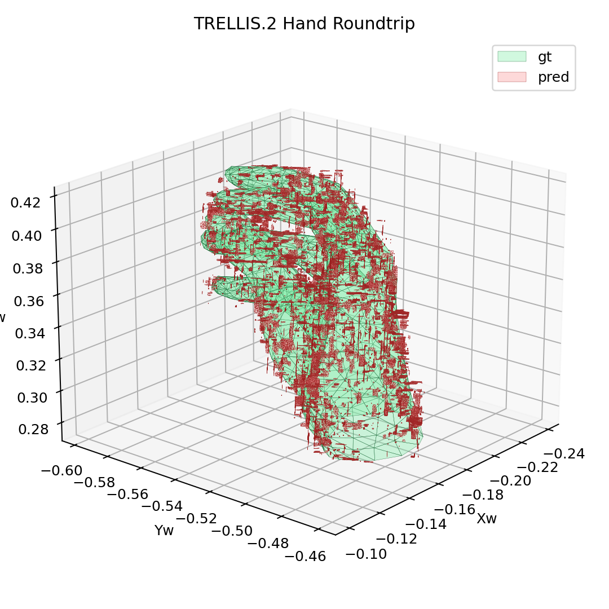
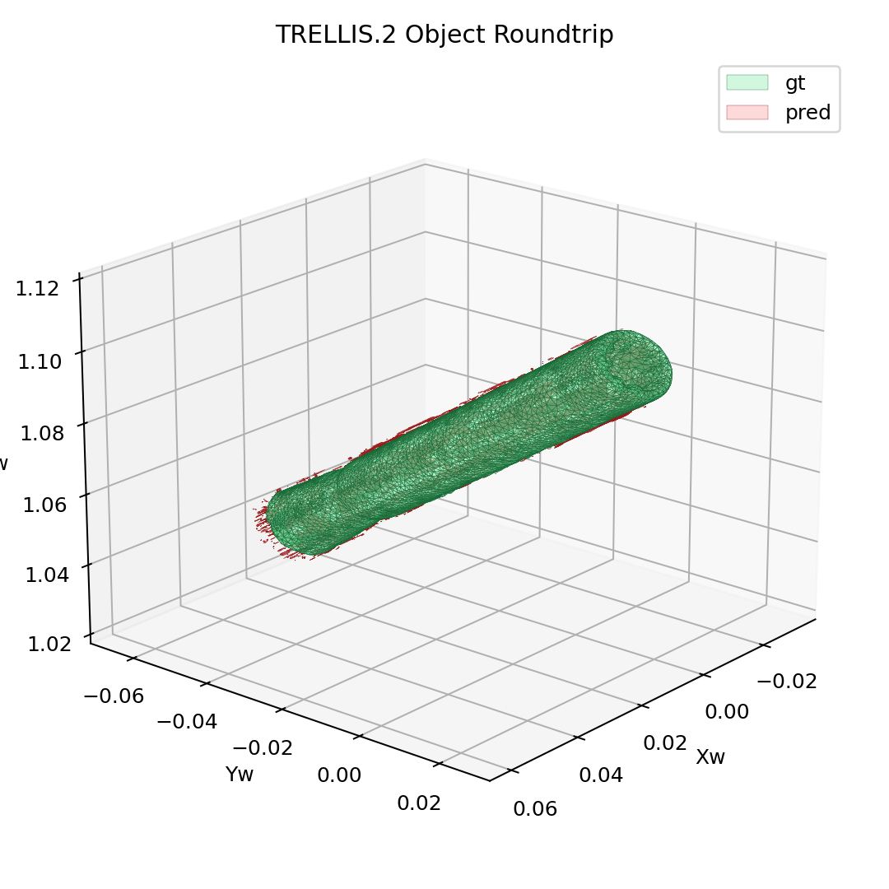
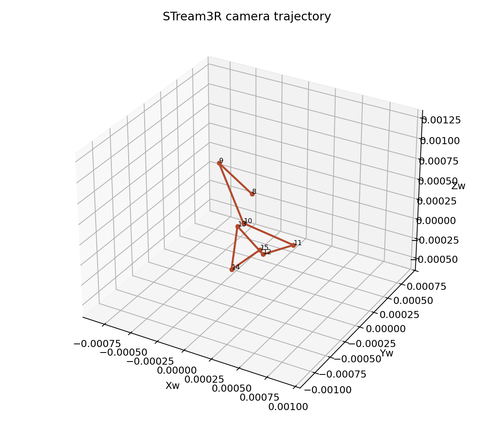
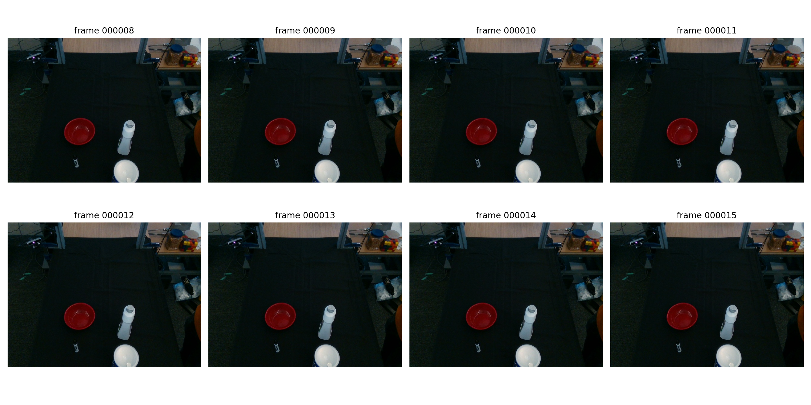
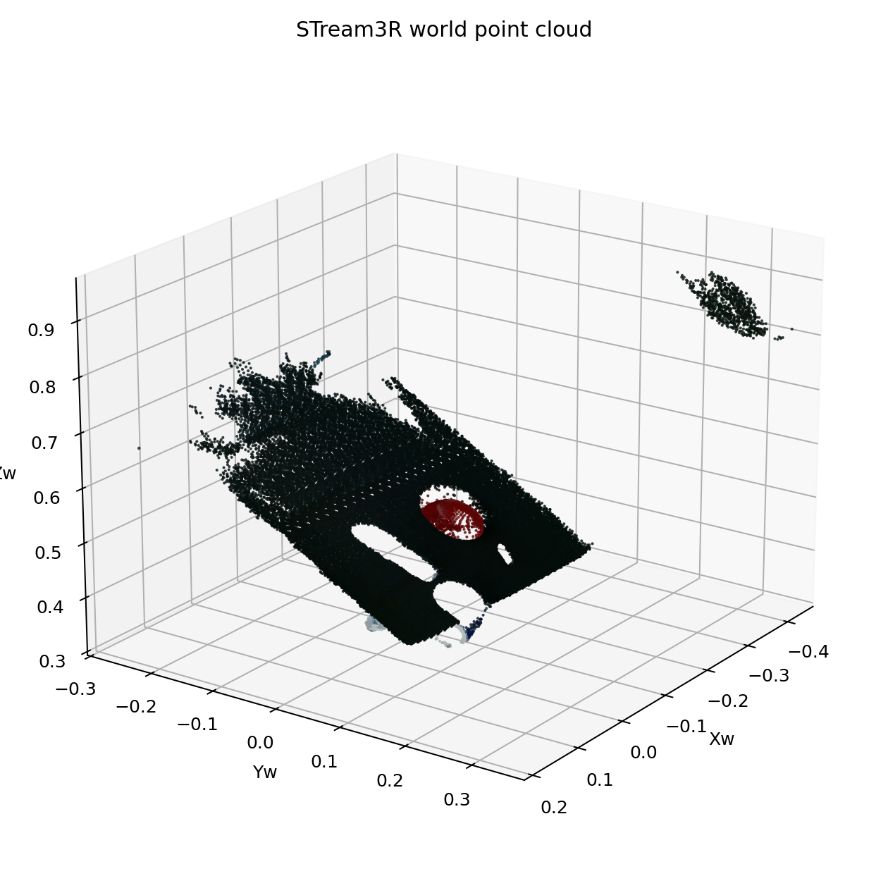

Experiment goal
按 `docs/PROJECT_PLAN.md` 的 Phase 0 gate，在一条随机 DexYCB 序列上分别验证 STream3R 和 TRELLIS.2 的独立推理路径。
STream3R passed on the selected DexYCB sequence, and TRELLIS.2 shape encoder/decoder checkpoints completed the requested frame-12 roundtrip in `human3r`. Random sequence fixed by seed 20260405; Phase 0 gate is satisfied for the requested TRELLIS.2 shape scope, not the full image-to-3D pipeline
按 `docs/PROJECT_PLAN.md` 的 Phase 0 gate，在一条随机 DexYCB 序列上分别验证 STream3R 和 TRELLIS.2 的独立推理路径。
PASS（按请求范围）。STream3R 与 TRELLIS.2 shape enc/dec 分支都已在同一条随机 DexYCB 样本上独立跑通，因此当前 Phase 0 gate 对本次目标已满足。这里不主张 full image-to-3D pipeline 已验证完成。

Ground-truth and reconstructed hand-object scene layout in world coordinates.

Hand vertex distribution in world coordinates.

Object vertex distribution in world coordinates.

Experiment artifact mirrored into the public asset bundle.

Experiment artifact mirrored into the public asset bundle.

Experiment artifact mirrored into the public asset bundle.